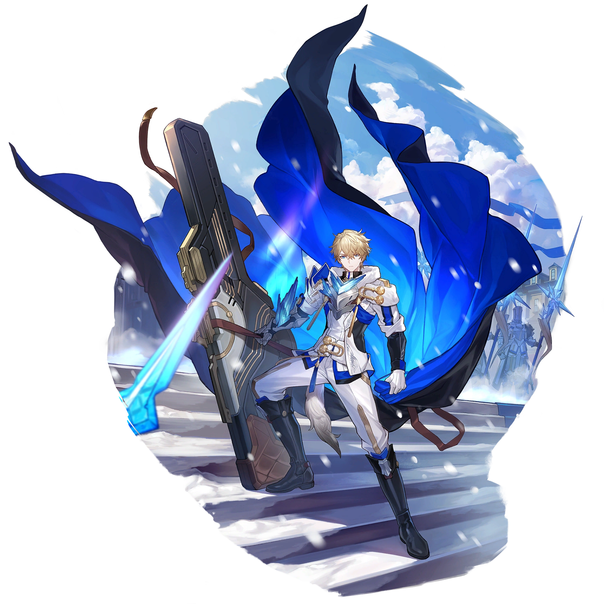
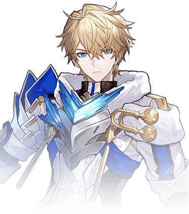

Descripcion del personaje
Gepard es un personaje 5 estrellas del Banner Permanente de Honkai Star Rail muy recomendado ya que es un Tanque con todas las de la ley y su rol lo cumple a la perfección.
Es un personaje con una resistencia increíble cuyo rol será el de proporcionar escudos al equipo para que estos no reciban daño (posee un escudo para todo el equipo bastante potente) mientras que a su vez recibe los golpes del enemigo (ya que él los resistirá mejor) y trata de ir congelando a alguno para tener algo más de CC (Crowd Control, control de masas vamos). Pero como es normal, no tiene un buen daño.
Introduccion al personaje
Gepard es un personaje importante en Honkai: Star Rail y es miembro de la respetada familia Landau. Es un soldado leal y uno de los principales defensores de la ciudad de Belobog, ubicada en el planeta Jarilo-VI. Como capitán de los Caballeros Silvaneos, una élite militar dedicada a proteger la ciudad, Gepard juega un papel crucial en la defensa de la población contra las amenazas externas, como los monstruos y otros peligros provenientes del exterior.
es conocido por su sentido del deber, disciplina y gran sentido de justicia. Su compromiso con la protección de Belobog y sus ciudadanos lo ha convertido en una figura respetada por su valentía y dedicación. A pesar de su personalidad seria y firme en su responsabilidad como capitán, tiene un lado más suave, particularmente cuando se trata de su hermana, Serval Landau, una famosa ingeniera y músico de la ciudad. Aunque tienen caminos muy distintos (ella es una rebelde, mientras que él sigue las reglas estrictamente), su relación es de apoyo mutuo.

Calidad del personaje

VIA del personaje
Conservación

Estadisticas del personaje
- PV: 1397
- ATQ: 543
- DEF: 654
- VEL: 92